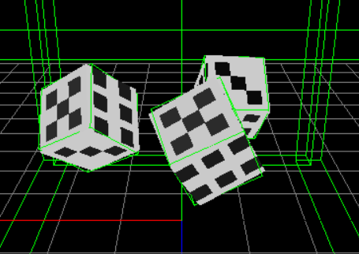
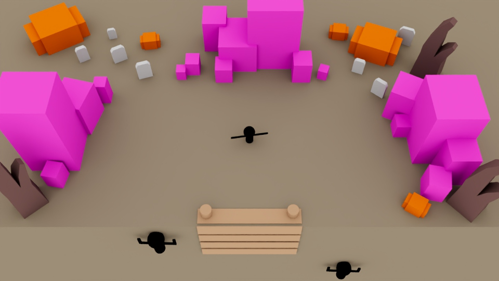
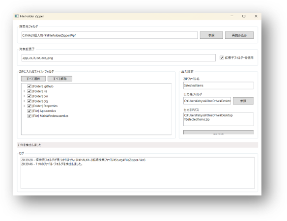

0Projects
0Awards
0Certifications
0Languages & Tools
SKILLS & TOOLS
扱える言語・制作環境
実装だけでなく、調整・検証・チーム運用まで含めて制作しています。
Game / Graphics
Development
AWARDS & CERTIFICATIONS
受賞歴・資格
受賞歴
- 技術力賞ＨＡＬ３校合同学内コンテスト
- 構成力賞ＨＡＬ３校合同学内コンテスト
資格
- システムデザインスキル情報処理活用能力検定（Ｊ検）／Ｊ検 情報システム試験
- システムエンジニア認定情報処理活用能力検定（Ｊ検）／Ｊ検 情報システム試験
- 基本スキル情報処理活用能力検定（Ｊ検）／Ｊ検 情報システム試験
- ＣＧエンジニア検定ベーシックＣＧエンジニア検定
- 情報活用試験 ２級情報処理活用能力検定（Ｊ検）
PROJECT INDEX
プロジェクト
カードを選ぶと、機能・処理・技術選定・問題解決をまとめた個別ページへ移動します。
 01
01Personal / DirectX11
奈落塔
小ステージを組み合わせて生成する、2.5D探索サバイバルローグライト。
- C++
- DirectX11
- ImGui
02WIND / SPRING / FIREWORK
Personal / Simulation
Physics & Particle Lab
ばね、風、後流、花火を数値から観察する物理実験環境。
- C++
- DirectX11
- ImGui
 03
03Personal / Unity
AssetBundle Loading Sample
Bundle生成から実行時ロードまでを2Dシューティングで検証。
- Unity
- C#
- AssetBundle

04Personal / Physics
チンチロローグライク
ダイスの衝突と転がりをゲームルールへつなげた試作。
- C++
- OBB
- RigidBody

05Team / Unity
CreatorKousien
ゲーム機能と、チーム制作を支えるEditor拡張を開発。
- Unity
- C#
- Editor

06Personal / Desktop tool
FileZipper
提出ファイルの抽出・命名・Zip化を一本化したWPFツール。
- C#
- WPF
- .NET 8
07
PMX→glTF
Personal / Graphics tool
pmxConverter
ボーン・モーション・ウェイトを編集してglTFへ出力。
- C++20
- OpenGL
- ImGui
 08
08Personal / Unity Physics
JoyaBellBozu
二重振り子をRK4で計算する鐘つきゲーム。
- Unity
- C#
- RK4
09DEPOTWORKSPACE
Learning / Version control
Perforce / P4V
Workspace操作とバージョン管理の基本を学習。
- Perforce
- P4V
 10
10Personal / DirectX11
仕事猫：無限残業編
設定UIと実行中に調整できるエフェクト制作環境を実装。
- C++
- DirectX11
- ImGui
 11
11Team / DirectX11
Buns&Party
料理・納品アクションと、調整・保存基盤をチームで制作。
- C++
- ImGui
- JSON
12
> NAME_
ATK 42 / SPD 18
> BATTLEPersonal / Console
ネームバトラー
文字列から能力値を生成するターン制コンソールゲーム。
- C
- Console
 13
13Personal / Editor
タワーディフェンス
3Dグリッド配置とマップ保存を扱うステージエディタ。
- C++
- DirectX11
- ImGui
 14
14Personal / Game design
Lost Page
4色のエーテルとカードコストを結び付けたデッキ構築ローグライト。
- Unity
- C#
- Game Design
NEXT STAGE
See more on GitHub ↗